Kona (West Side): Great for sunny weather, beaches, snorkeling, and shopping.
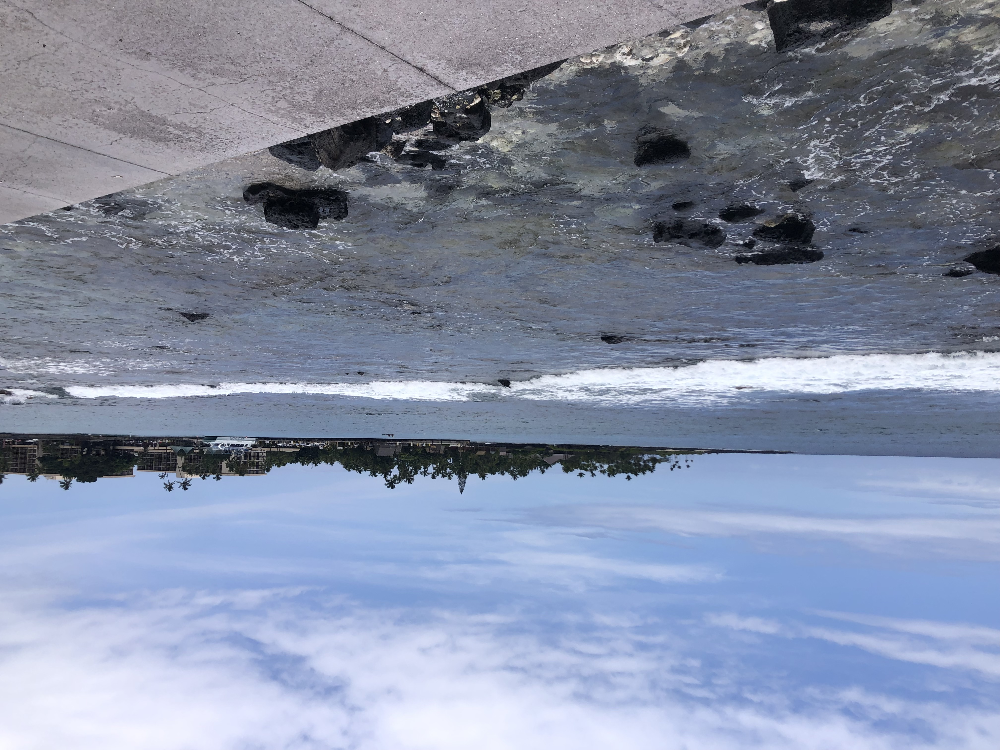Hilo (East Side): Ideal for lush rainforests, waterfalls, and exploring.
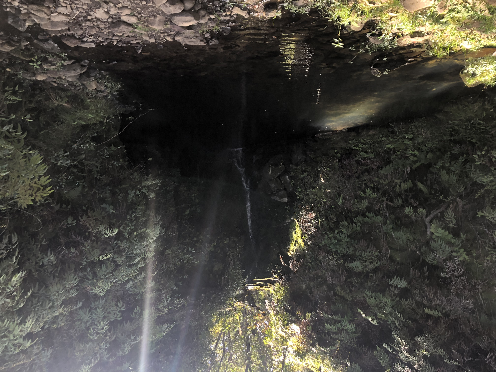See Kīlauea and Mauna Loa volcanoes. Hike trails like Kīlauea Iki Crater or Thurston Lava Tube.
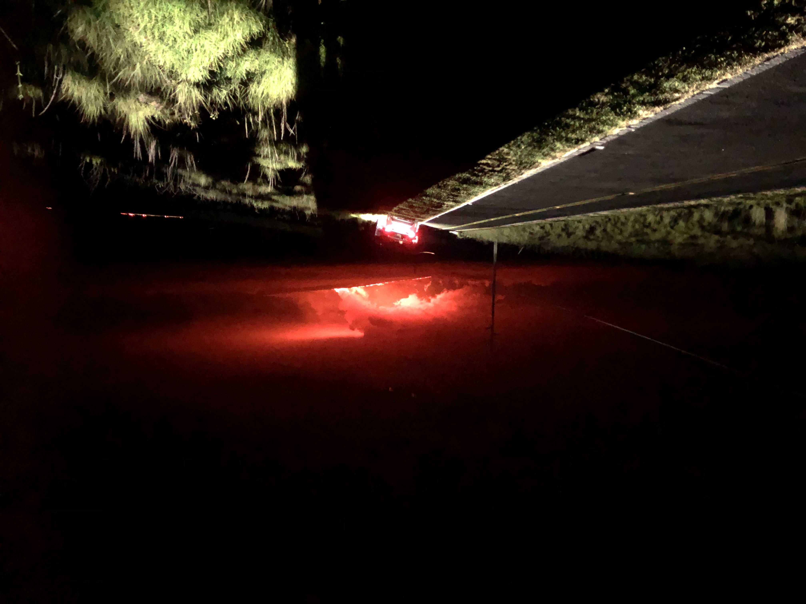Captain Cook's Cove: Take a boat ride and Snorkel at the monument for Captain Cook.
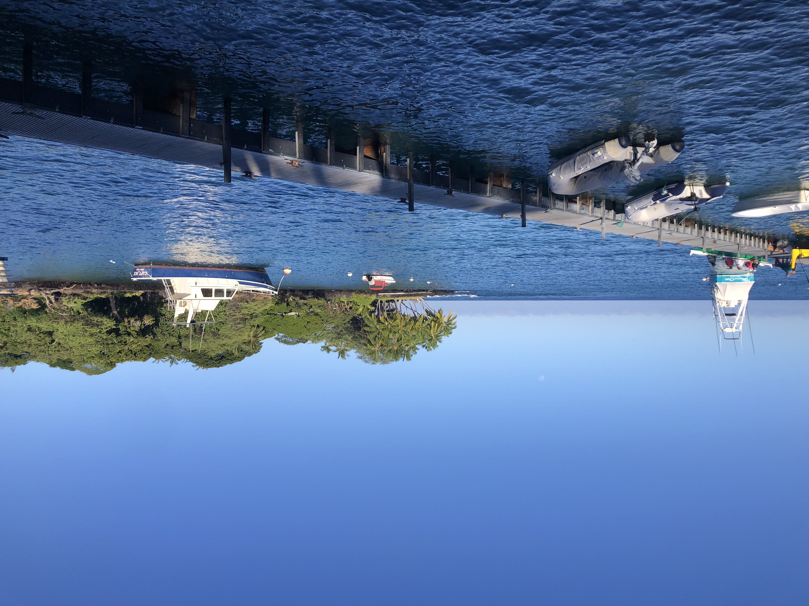 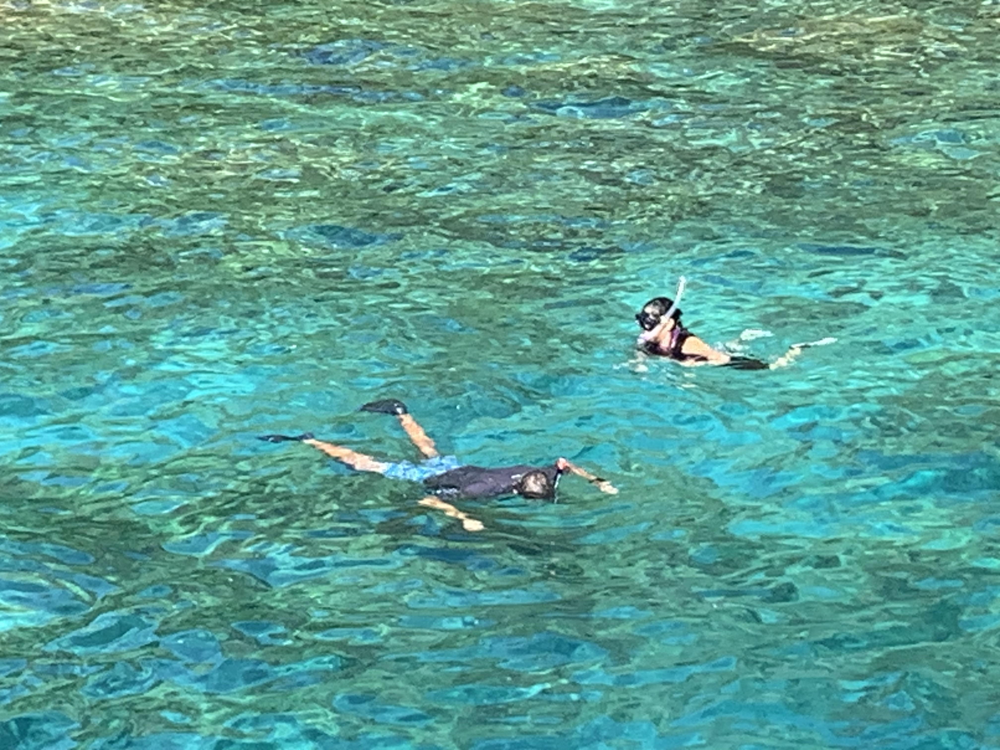Hapuna Beach: White sand, great for swimming or just relaxing on the beach.
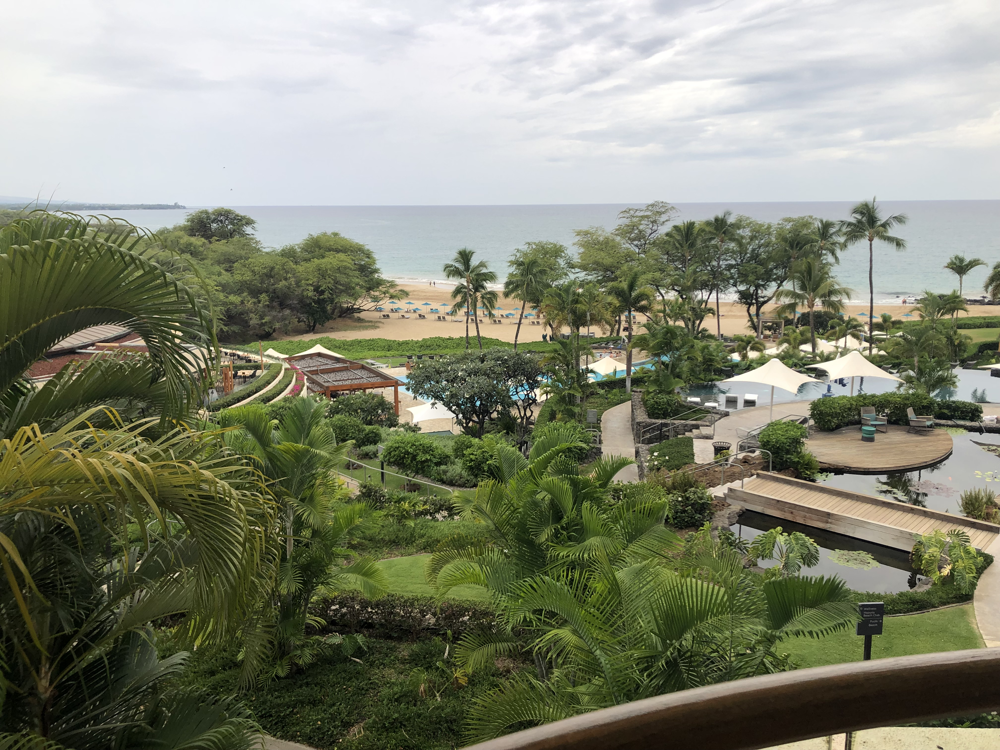 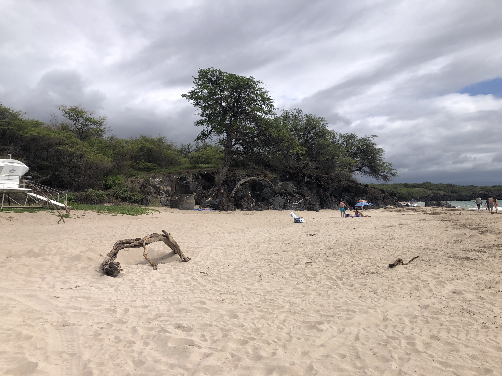Fine Dining: There are lots of fancy places to eat and watch the sunset!
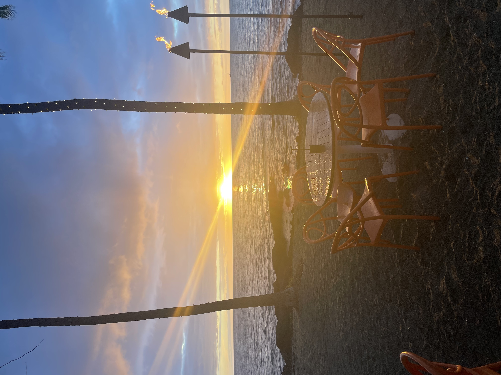Mauna Kea Summit: If the weather is good, Andy (Cietta's Husband) can take us on a behind the scenes tour of the Canada France Hawaii Telescope (CFHT).
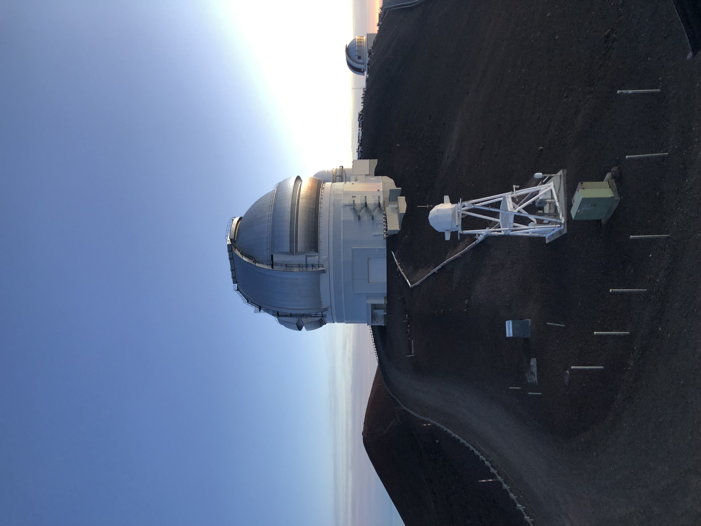We can stay at my sister's house in Waimea.
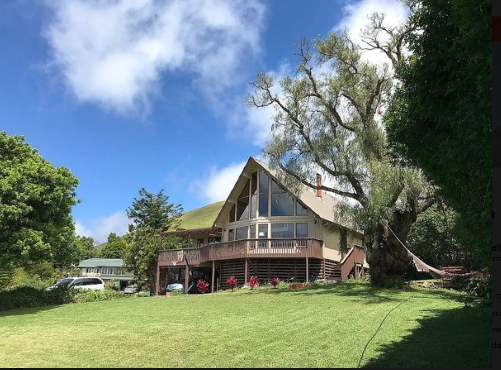 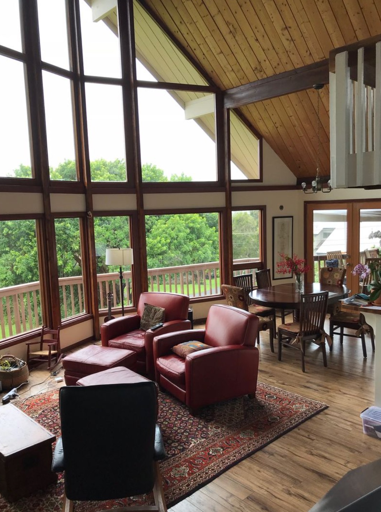I would also like to spend a couple nights at the Hilton.
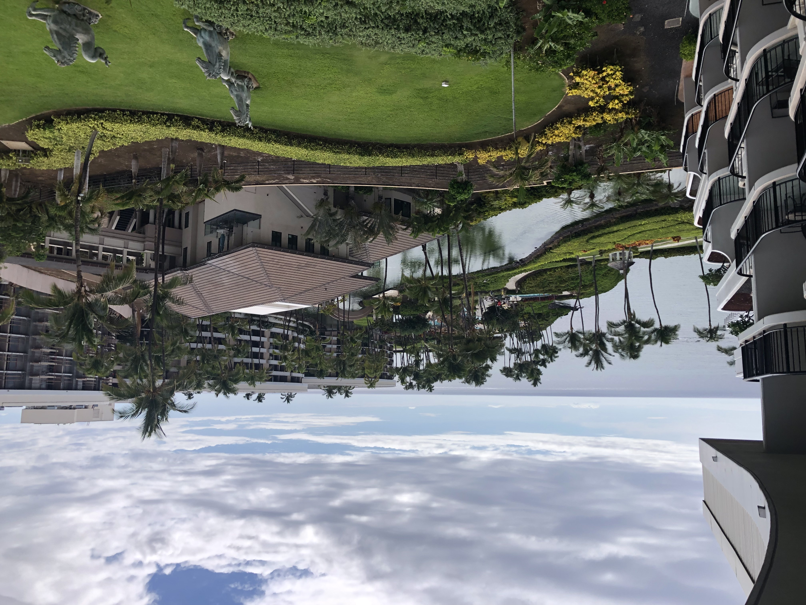 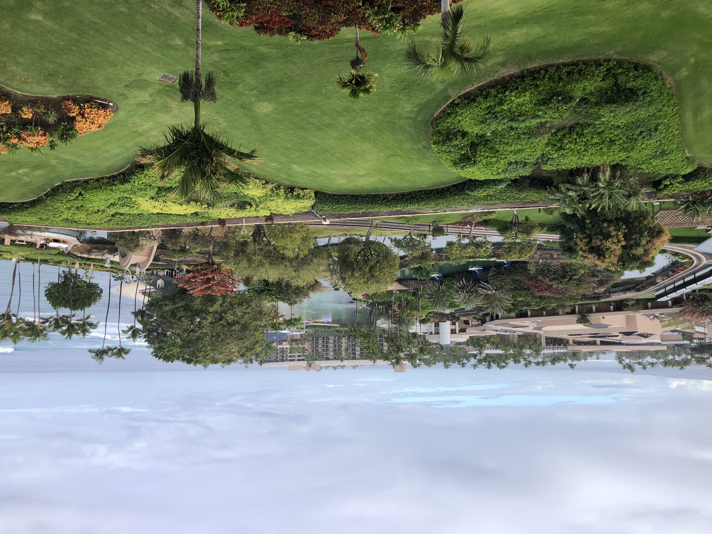